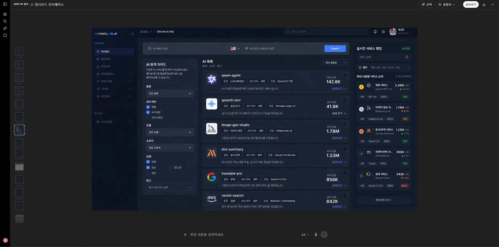
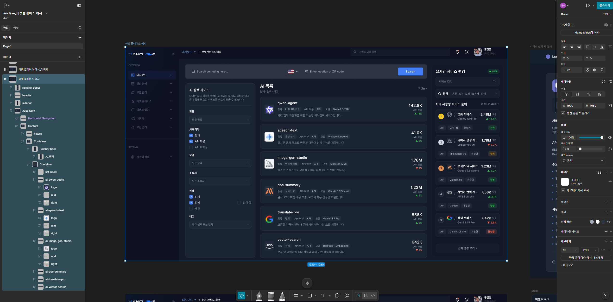
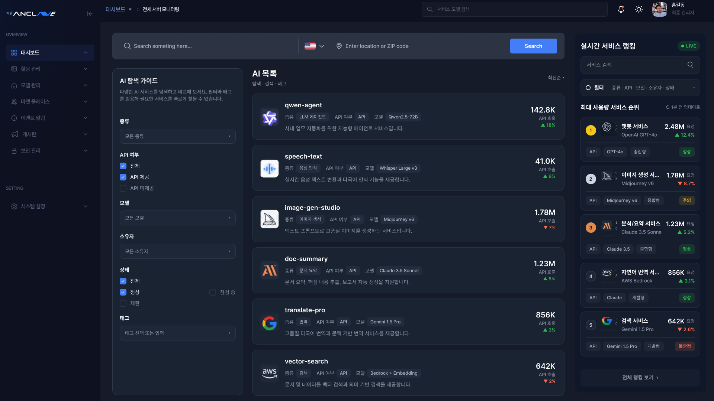
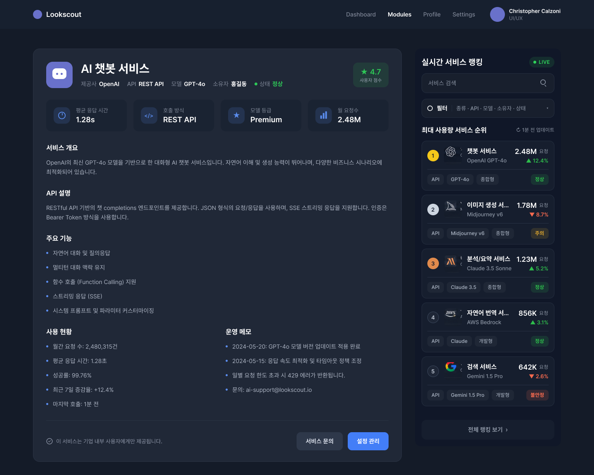

anclave(AI 마켓플레이스)를 만들면서 실제로 사용한 4단계 워크플로우입니다. 와이어프레임 → GPT 디자인 시안 → Figma MCP 컴포넌트화 → Claude 구현으로 이어지는 과정을 단계별 화면과 실제 Figma 캡처로 정리했습니다.
각 단계의 산출물이 다음 단계의 입력이 됩니다. 핵심은 3단계의 Figma MCP 컴포넌트화 — 이미지를 "보는 것"이 아니라 구조화된 디자인 데이터로 Claude가 직접 읽어 코드로 옮긴다는 점입니다.
화면 구조·정보 배치를 러프하게 잡는다. 레이아웃의 뼈대만.
와이어프레임 이미지를 첨부해 GPT로 최종 디자인 결과 이미지를 생성.
결과 이미지를 Figma로 옮기고 Claude+Figma MCP로 컴포넌트화.
Claude가 MCP로 컴포넌트 데이터를 가져와 실제 결과물 구현.
한 줄 요약 — 이미지를 던지면 AI가 "추측"하고, 컴포넌트화하면 AI가 "사실(데이터)"을 읽는다. 이 차이가 정확도·재사용·유지보수를 전부 가릅니다.
추측이 아니라 실제 토큰·간격을 읽어 픽셀 어긋남이 없습니다.
반복 요소가 컴포넌트로 잡혀 코드도 1개로 재사용됩니다.
디자인 토큰이 CSS 변수로 1:1 매핑돼 색·간격이 흔들리지 않습니다.
"이 컴포넌트만 수정"이 가능하고, 새 화면을 같은 시스템에서 파생합니다.
본격적인 디자인 전에 화면의 골격을 잡는 단계입니다. 색·폰트·디테일은 의도적으로 비우고, "무엇이 어디에 들어가는가"만 빠르게 배치합니다. GPT에게 줄 레이아웃 의도를 명확히 하는 게 목적입니다.
이 단계를 건너뛰고 텍스트 설명만으로 GPT에 요청해도 됩니다. 다만 와이어프레임을 첨부하면 레이아웃 의도가 그대로 전달돼 시안 적중률이 크게 올라갑니다.
1단계의 와이어프레임 이미지를 첨부하고, 톤·무드·컬러·스타일을 지시해서 GPT로 완성도 높은 디자인 시안 이미지를 뽑습니다. anclave는 "다크 테마 + 블루 액센트의 데이터 대시보드" 방향으로 시안을 받았습니다.
실제 anclave 파일에는 이 GPT 시안이 "마켓 플레이스 목표 이미지" 레이어로 보관돼 있습니다 (현재 hidden 처리). 이 시안과 최종 컴포넌트 결과를 나란히 두고 비교하며 작업합니다.
실제 GPT 출력 결과 — 아래는 와이어프레임을 첨부해 GPT로 생성한 실제 디자인 시안입니다. 이 이미지가 다음 단계 Figma 컴포넌트화의 목표 이미지(target)가 됩니다.

GPT 시안 이미지를 Figma로 옮긴 뒤, Claude + Figma MCP로 화면을 실제 프레임·오토레이아웃· 컴포넌트 인스턴스로 재구성합니다. 이미지가 "구조를 가진 디자인 데이터"로 바뀌는 가장 중요한 단계입니다.
Figma 데스크톱의 Dev Mode MCP 서버를 통해 Claude가 캔버스를 읽고, 레이어를 생성하고, 반복 요소를 컴포넌트/인스턴스로 묶습니다. 좌측 레이어 트리, 중앙 캔버스, 우측 속성 패널이 모두 구조화된 데이터로 다뤄집니다.
Figma MCP는 get_metadata로 레이어 구조를,
get_design_context로 컴포넌트 코드·토큰을,
get_screenshot으로 렌더 이미지를 가져옵니다.
실제 Figma 캡처 — 아래는 MCP get_screenshot으로
anclave 파일에서 직접 가져온 컴포넌트화 결과물입니다. (목업이 아닌 실제 화면)

마지막으로 Claude Code에서 Figma MCP로 컴포넌트화된 결과물을 읽어 실제 프론트엔드 코드로 옮깁니다. Claude는 레이어 구조·토큰·간격을 그대로 참조하므로, 손으로 픽셀을 옮기는 대신 디자인 의도를 보존한 코드가 나옵니다.
아래 이미지는 모두 anclave Figma 파일에서 Figma MCP로 직접 캡처한 실제 화면입니다. GPT 시안 → 컴포넌트화 → 코드 구현으로 이어진 결과를 확인할 수 있습니다.


anclave를 이 흐름으로 만들면서 효과가 컸던 포인트와 주의할 점입니다.
1단계는 예쁠 필요 없습니다. 색·폰트 없이 배치만 잡아도 GPT 시안 적중률이 확 올라갑니다. 그래서 선택사항이지만 강력 추천.
이미지를 "보고 따라 그리는" 게 아니라, Figma MCP로 레이어·토큰·간격을 구조화된 데이터로 읽기 때문에 디자인 의도가 코드까지 보존됩니다.
MCP가 레이어 이름·구조를 그대로 읽습니다. "Frame 234" 대신 "AI 목록", "Card" 처럼 의미 있는 이름이면 컴포넌트화·구현 품질이 좋아집니다.
GPT 목표 이미지처럼 숨긴(hidden) 레이어는 MCP 스크린샷이 1×1로 깨집니다. 캡처가 필요하면 잠깐 보이게 한 뒤 다시 숨기세요.
컬러·간격을 디자인 변수(토큰)로 먼저 정리하면, 3단계 컴포넌트화와 4단계 코드의 CSS 변수가 1:1로 매핑돼 유지보수가 쉬워집니다.
구현 후 get_screenshot 결과와 실제 렌더를 나란히 비교하면, 픽셀 단위 어긋남을 빠르게 잡을 수 있습니다.